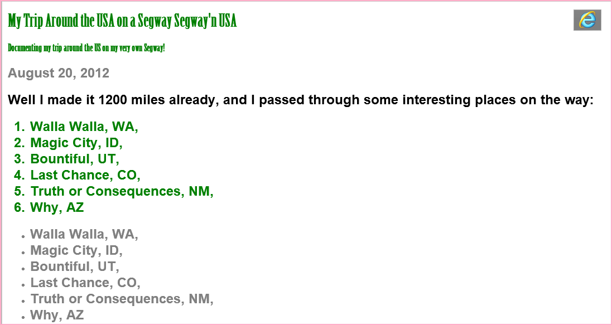

Well I made it 1200 miles already, and I passed through some interesting places on the way:
I saw some Burma Shave style signs on the side of the road today: "Passing cars, When you can't see, May get you, A glimpse, Of eternity." I definitely won't be passing any cars.
My first day of the trip! I can't believe I finally got everything packed and ready to go. Because I'm on a Segway, I wasn't able to bring a whole lot with me:
Just the essentials. As Lao Tzu would have said, "A journey of a thousand miles begins with one Segway."
用IE跟Chrome瀏覽字體的呈現不同。
